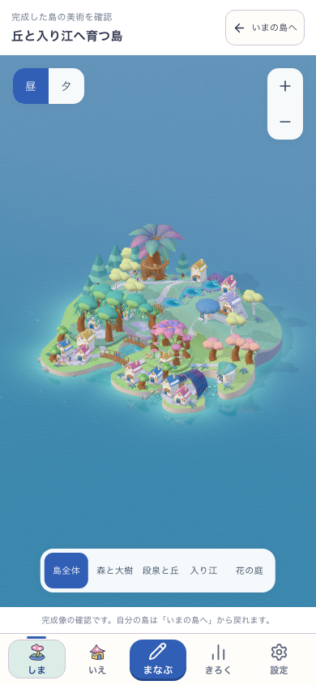
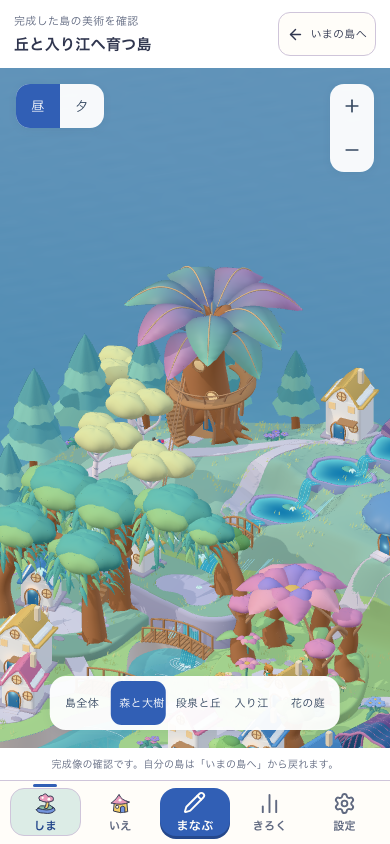
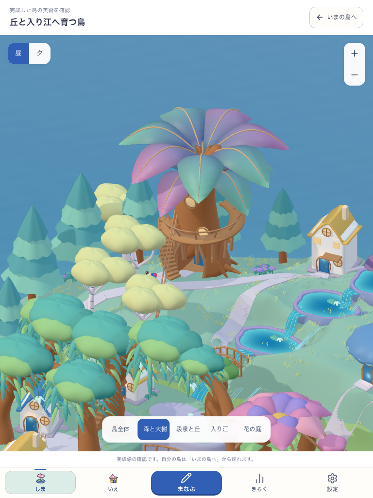
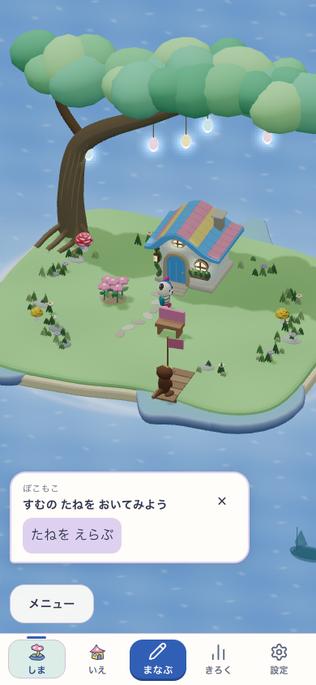
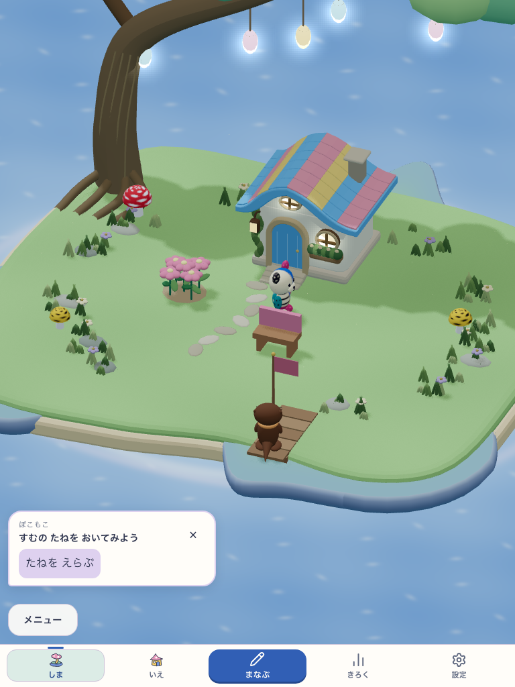
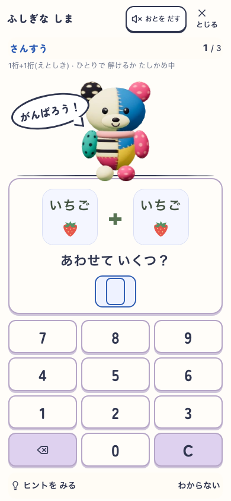
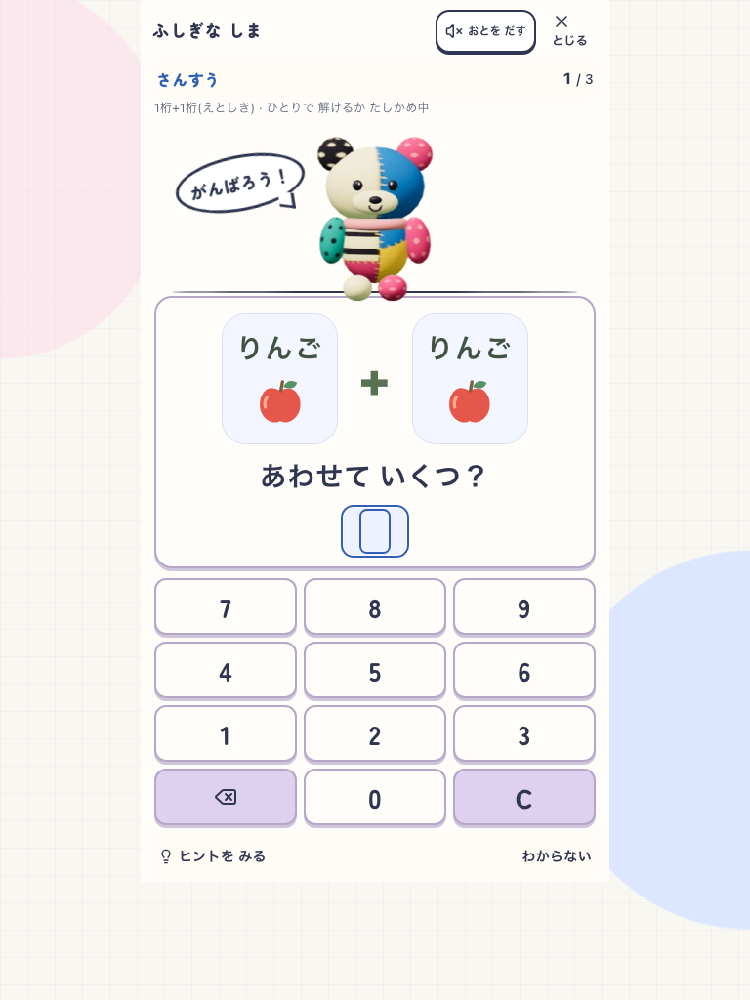

完成美術の確認から、自分の島と学習へ。
実初回設定から作った隔離プロフィールの固定buildを撮影。通常の所有島の美術完成、自然取得、子どもの無説明理解や実機評価の証拠へは広げません。
完成全島を確認する


森と大樹を見回す


自分の島へ戻る


いつもの学習へ進む


失敗から再表示できる
この4画面は390幅での明示した通信失敗と実WebGL context lossの診断です。